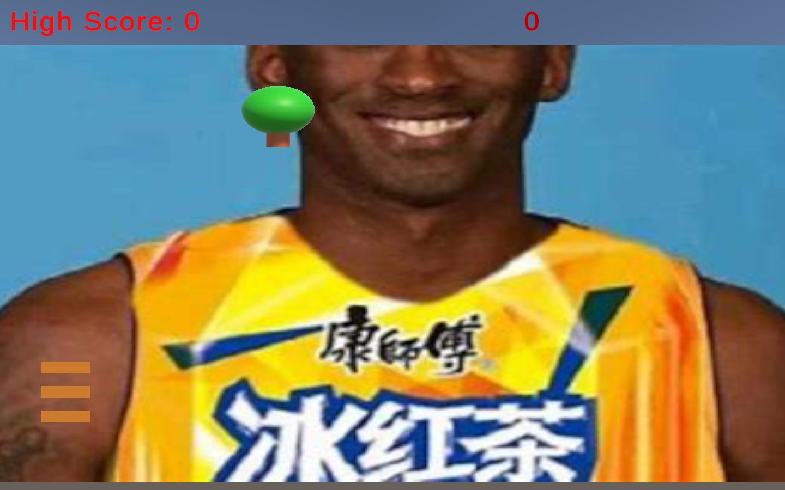
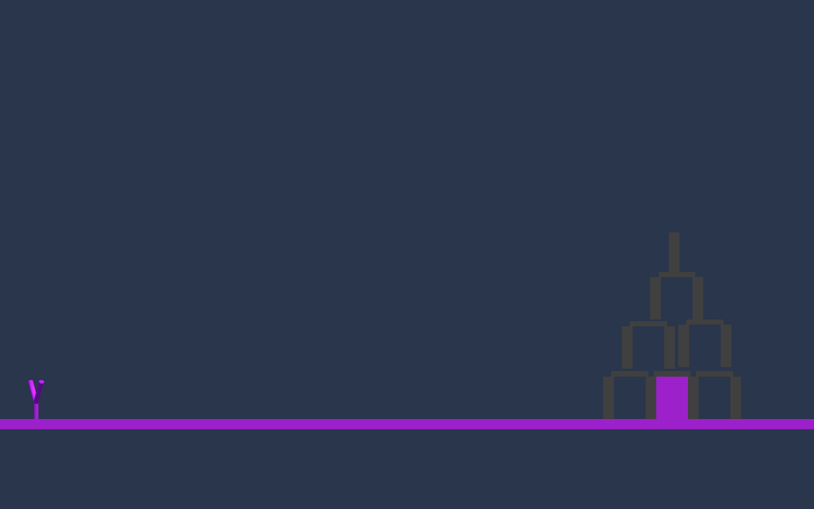
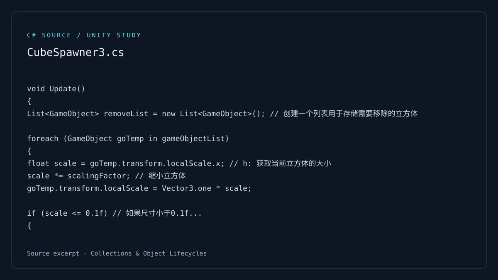
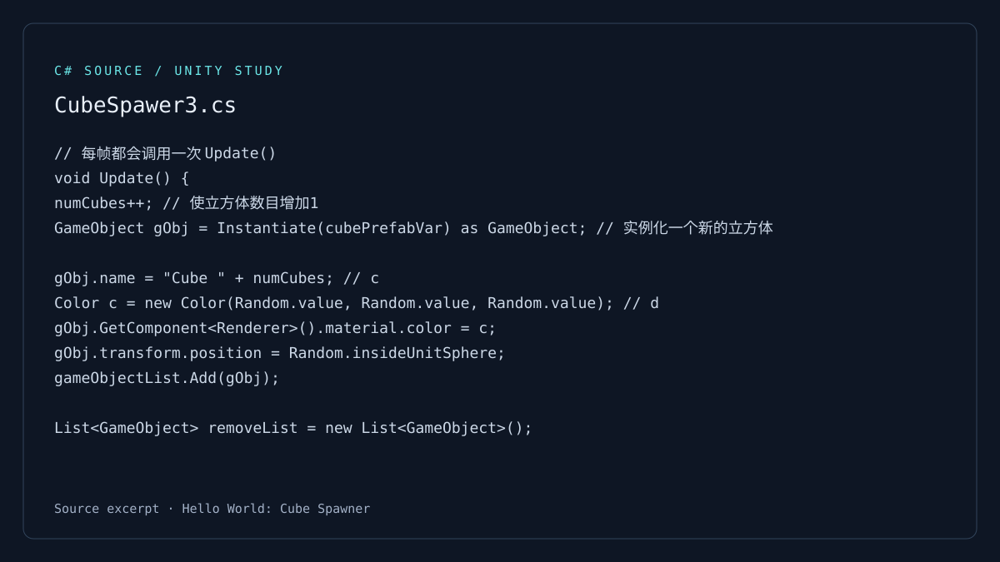
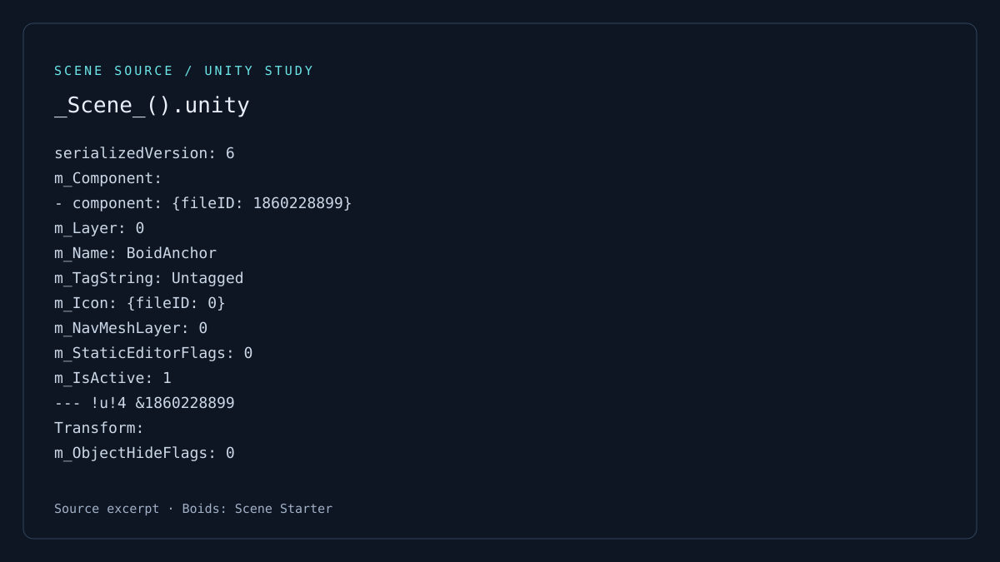

Game prototype
Apple Picker
A mouse-controlled catching game with scoring, lives, and increasing difficulty.
Build / Learn / Iterate
Small experiments. Working ideas. Lessons from building.
01 / Game development
2 game prototypes · 2 scripting studies · 1 scene starter
A collection from my Unity coursework and practice: from catching games and projectile physics to object lifecycles and scene setup.

Game prototype
A mouse-controlled catching game with scoring, lives, and increasing difficulty.

Game prototype
A slingshot physics prototype with projectile control and destructible structures.


C# study
A first experiment with prefab instantiation, random color, and object lifetime.
